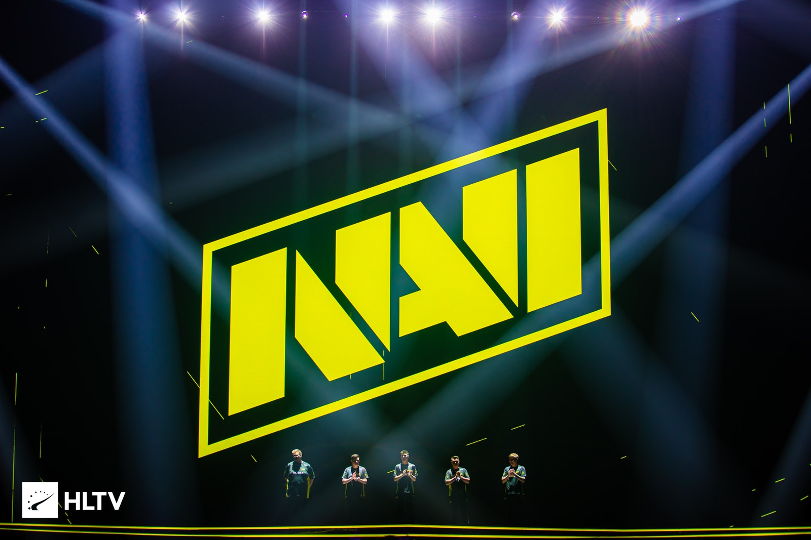
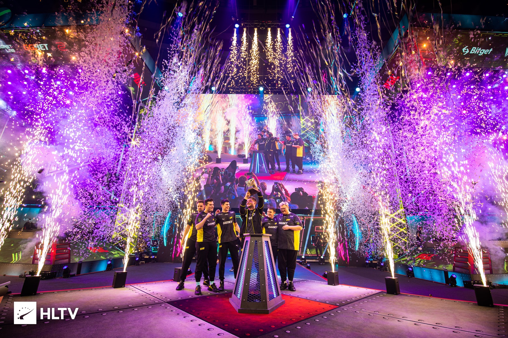
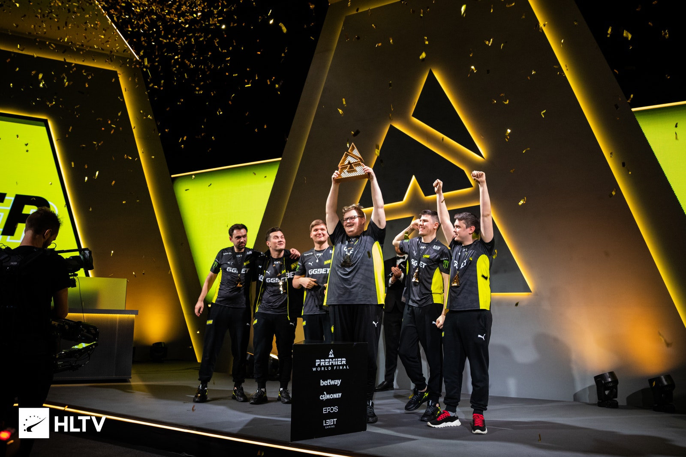
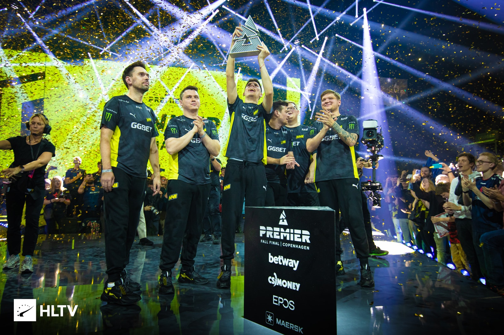

Od svého vzniku v roce 2009 byl projekt podporován známým mecenášem a organizátorem turnajů v počítačových hrách Muratem Žumaševičem („Arbalet“). V říjnu roku 2011 došlo k ukončení spolupráce mezi Žumaševičem a členy organizace, načež společnost Natus Vincere vedla a rozvíjela svou činnost vlastními silami[2]. Generálním ředitelem organizace je v současnosti Alexander Kochanovskyj. („ZeroGravity“)
V roce 2009 založil Murat Žumaševič („Arbalet“) klan Arbalet.UA, který se skládal z ukrajinských hráčů ve hře Counter-Strike 1.6, dříve hrající za týmy KerchNET a Pro100. Do týmu přišli hráči z Charkova Danyyl Teslenko („Zeus“) a Ivan Suchrijev („Edward“), z Kyjeva Sergej Iščuk („starix“), Arsenyj Trynoženko („Esenin“) ze Lvova a Egor Markelov („markeloff“) z Dněpropetrovska. Manažerem týmu se stal Alexander Kochanovskyj („ZeroGravity“) z Kyjeva. Po vítězství v turnaji Arbalet Cup Asia 2010, na kterém hrál tým pod názvem „Na`Vi“, se uskutečnil konkurs o nejlepší název týmu, v důsledku čehož byl tým přejmenován na „Natus Vincere“ (lat. zrozeni k vítězství) a zachovali si klantag „Na`Vi“. Rok 2010 byl pro Natus Vincere velmi úspěšným. Tým nejdříve vyhrál grand finále čtvrté sezóny Intel Extreme Masters, ve kterém porazil švédský celek fnatic, poté se, jako první tým z SNG, stal šampiónem ESWC a nakonec byl zapsán do seznamu vítězů na mistrovství světa World Cyber Games. Tento tým byl první na světě, který vybojoval tři nejprestižnější mistrovské tituly (IEM, ESWC, WCG) za jeden rok. Na konci roku hráči Natus Vincere zvítězili na LAN-turnaji DreamHack Winter 2010 a dosáhli dalšího rekordu, když si za rok vydělali více než 215 tisíc dolarů a překonali tak předchozí úspěch týmu fnatic (189 tisíc dolarů v roce 2009). Dne 5. května roku 2011 obhájili na turnaji Intel Extreme Masters v Hannoveru titul mistrů světa a vydělali si 35 000 dolarů. Pouze v roce 2012 členové Natus Vincere titul nezískali, jelikož ve finále IEM VI World Championship prohráli. Na konci roku 2012 všichni hráči přešli na novou verzi hry – Counter-Strike: Global Offensive. Na rozdíl od předchozí verze Counter-Strike 1.6, ve které v letech 2009–2012 dosahovali maximálních úspěchů, se jim v nové verzi CS:GO již tolik nedaří a úspěchů na nejvyšší úrovni nedosahují. V souvislosti s tím se v roce 2013 sestava hráčů několikrát změnila a tým opustili Egor Markelov a Arsenyj Trinoženko. Od prosince roku 2013 se kolektiv hráčů nezměnil, dokud v březnu roku 2015 nebylo ohlášeno, že Sergej Iščuk skončil s aktivním hraním a zaujal pozici manažera a trenéra týmu[3]. V dubnu roku 2015 Natus Vincere získávají první důležité vítězství na mezinárodním turnaji v CS:GO a stávají se vítězem premiérové sezóny ESL Pro League 4.